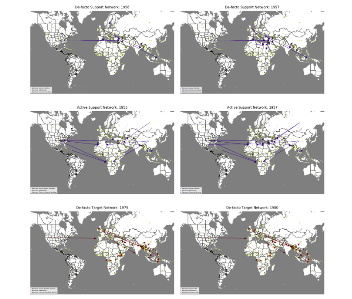
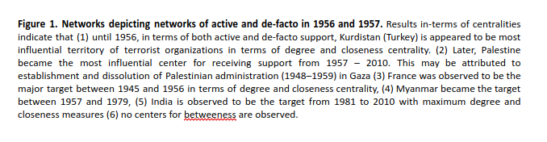
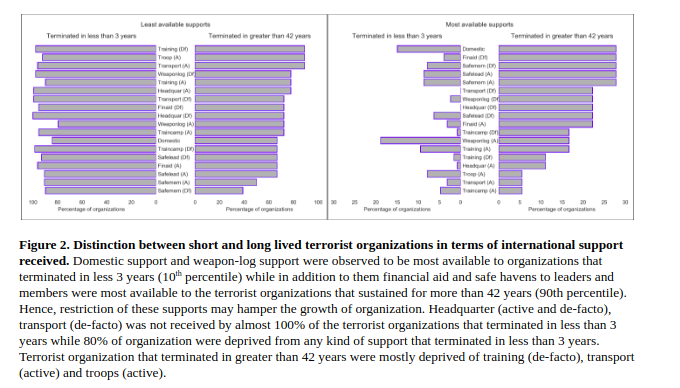
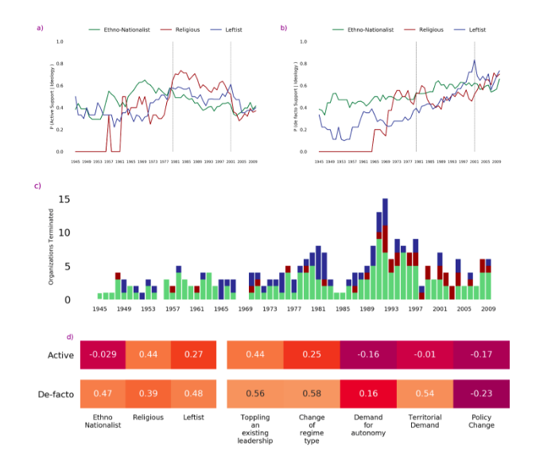
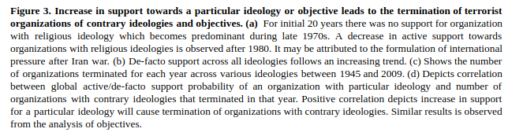
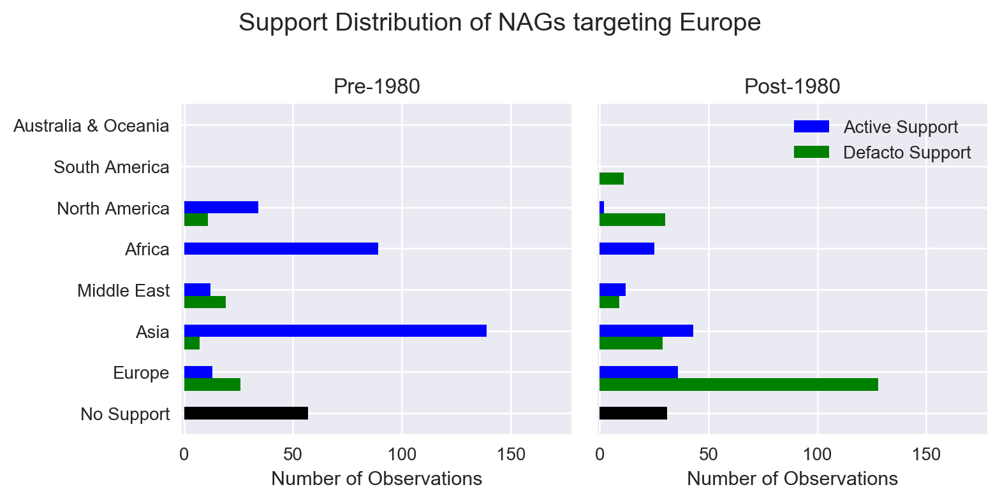

Analysis of Terror Network.
Summer Research Program 2018, Koc University, Istanbul, Turkey.
I was selected for the Summer Research Program at KOC University, Istanbul, Turkey. My project Dangerous Companions is an interdisciplinary initiative that focuses on non-state violence, especially the role of terrorism, the Middle East Conflict etc.
Further, I pursued this project as Major Project at Jaypee Institute of Information Technology under Social-Security domain.
P>Project is supplied by novel NAG Dataset . My task was focused on Data Visualization using directed graphs, analyzing yearly variations, cycles, and Hypothesis testing. NAG stands for Non-State Armed Groups (terrorists or revolutionaries).
Evolution of NAG Ideologies.
 Details: Visualizations/
Details: Visualizations/
Visualizations: Dir consists of visualization of Dynamic Support->Target Terror Network from year 1945 - 2010.
Derived Features
A) Network Centralities
 B) Deprivation Score
C) Global Support Trends
 D) Use of Voilence
Insiders Treat

Details: Analysis-Insiders Treat/
Analysis-Insiders Threat: Dir consists of analysis of patterns in pre 1980 and post 1980 support.
Prediction of lifespan is performed using Bayesian linear regression and further optimized using Ridge regression.
Details about problem statement and further implementation will be available after publication in relevant journal.